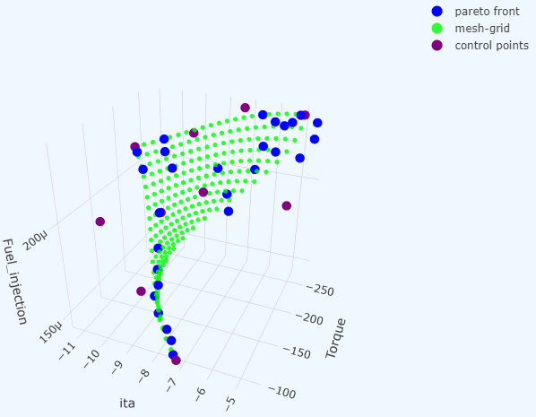
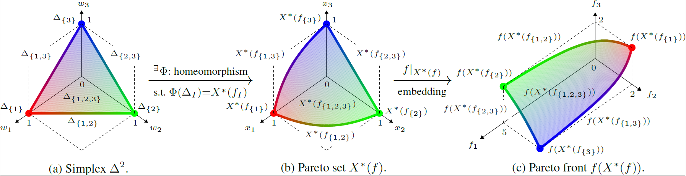

What is Bézier simplex fitting?
You are probably familiar with Bézier curves (1-D) and Bézier triangles (2-D) from computer graphics and CAD software. A Bézier simplex is their natural generalization to any number of dimensions: the same elegant polynomial construction, extended to a hypersurface of arbitrary dimension defined over a standard simplex.
At its core, Bézier simplex fitting is a general-purpose regression technique. Just as a regular Bézier curve smoothly interpolates or approximates a 1-D point cloud using a small set of control points, a Bézier simplex can approximate any continuous map from a standard simplex to a high-dimensional Euclidean space. Given a point cloud dataset defined over simplex coordinates, it can fit a highly flexible and mathematically well-behaved parametric surface to the data.
This page introduces the formal definition of Bézier simplices, the least-squares fitting algorithm used by PyTorch-BSF, and its most prominent real-world applications.
Bezier simplex
Let \(D, M, N\) be nonnegative integers, \(\mathbb N\) the set of nonnegative integers (including zero!), and \(\mathbb R^N\) the \(N\)-dimensional Euclidean space. We define the index set by
and the simplex by
An \((M-1)\)-dimensional Bezier simplex of degree \(D\) in \(\mathbb R^N\) is a polynomial map \(\mathbf b: \Delta^{M-1}\to\mathbb R^N\) defined by
where \(\mathbf t^{\mathbf d} = t_1^{d_1} t_2^{d_2}\cdots t_M^{d_M}\), \(\binom{D}{\mathbf d}=D! / (d_1!d_2!\cdots d_M!)\), and \(\mathbf p_{\mathbf d}\in\mathbb R^N\ (\mathbf d\in\mathbb N_D^M)\) are parameters called the control points.

Fig. 1 A 2-D Bézier simplex of degree 3 in \(\mathbb R^3\) and its control points. The shape of the simplex is determined by the control points \(\mathbf p_{(3,0,0)}, \mathbf p_{(2,1,0)}, \ldots, \mathbf p_{(0,0,3)}\).
Bézier simplex fitting
Assume we have a finite dataset \(B\subset\Delta^{M-1}\times\mathbb R^N\) and want to fit a Bézier simplex to the dataset. What we are trying can be formulated as a problem of finding the best vector of control points \(\mathbf p=(\mathbf p_{\mathbf d})_{\mathbf d\in\mathbb N_D^M}\) that minimizes the least square error between the Bezier simplex and the dataset:
PyTorch-BSF provides an algorithm for solving this optimization problem with the L-BFGS algorithm.
{kind=link}

Fig. 2 A Bezier simplex fitted to a dataset. The control points are determined by the least squares fitting algorithm.
Approximation theorem
Any continuous map from a simplex to a Euclidean space can be approximated by a Bezier simplex. More precisely, the following theorem holds [KHS+19]:
Theorem 1 (Universal Approximation Theorem)
For any continuous map \(\phi: \Delta^{M-1} \to \mathbb{R}^N\) and any \(\epsilon > 0\), there exists a degree \(D\) and control points \(\mathbf{p}\) such that the Bézier simplex \(\mathbf{b}(\mathbf{t} \mid \mathbf{p})\) satisfies \(\max_{\mathbf{t} \in \Delta^{M-1}} \| \phi(\mathbf{t}) - \mathbf{b}(\mathbf{t} \mid \mathbf{p}) \| < \epsilon\).
This guarantees that Bézier simplices are universal approximators for any continuous simplex-domain function.
Relation to multi-objective optimization
Data suitable for modeling with a Bézier simplex are point clouds distributed along a low-dimensional (e.g., 1 to 10 dimensions) curved simplex lying within a high-dimensional ambient space (e.g., tens to thousands of dimensions). Such data can be regarded as samples from the solution set of a specific class of multi-objective optimization problems.
Multi-objective optimization
In many real-world applications, from engineering design to machine learning, we often need to optimize multiple conflicting criteria simultaneously (e.g., maximizing performance while minimizing cost). Because these objectives naturally compete with one another, it is generally impossible to find a single perfect solution. Instead, multi-objective optimization seeks to find a set of optimal trade-offs, providing the mathematical foundation to explore and select the best compromise.
Definition 1 (Multi-Objective Optimization Problem)
Let \(X\) be a feasible decision space. A multi-objective optimization problem with \(M\) objectives aims to minimize a vector-valued function:
Since the objectives typically conflict with one another, there is rarely a single solution that minimizes all \(M\) objectives simultaneously. Instead, optimality is defined in terms of trade-offs.
Definition 2 (Pareto Set and Pareto Front)
A solution \(x \in X\) is said to dominate another solution \(x' \in X\) if \(f_m(x) \le f_m(x')\) for all \(m \in \{1, \ldots, M\}\) and \(f_j(x) < f_j(x')\) for at least one index \(j\).
A solution \(x^* \in X\) is Pareto optimal if no other solution within \(X\) dominates it.
The Pareto set is the set of all Pareto optimal solutions in the decision space \(X\).
The Pareto front is the image of the Pareto set in the objective space \(f(X) \subset \mathbb{R}^M\).
Weakly simplicial problems
In many real-world multi-objective optimization problems, the Pareto set and Pareto front exhibit a highly structured, continuous shape. Specifically, they often mirror the topological structure of a standard simplex (e.g., a curve for a two-objective problem, a curved triangle for a three-objective problem, and so on). The concept of a weakly simplicial problem formally captures this property, ensuring that the optimal trade-off surfaces are well-behaved and can be elegantly approximated by Bézier simplices.
Definition 3 (Weakly Simplicial Problem [MHI21])
Let \(f:X\to\mathbb R^M\) be a mapping, where \(X\) is a subset of \(\mathbb R^N\). The problem of minimizing \(f\) is \(C^r\)-simplicial if there exists a \(C^r\)-mapping \(\Phi:\Delta^{M-1} \to X^\star(f)\) such that both the mappings \(\Phi|_{\Delta_I}:\Delta_I\to X^\star(f_I)\) and \(f|_{X^\star(f_I)}:X^\star(f_I)\to f(X^\star(f_I))\) are \(C^r\)-diffeomorphisms for any nonempty subset \(I\) of \(\{1,\ldots,M\}\), where \(0\le r\le\infty\). The problem of minimizing \(f\) is \(C^r\)-weakly simplicial if there exists a \(C^r\)-mapping \(\phi:\Delta^{M-1}\to X^\star(f)\) such that \(\phi(\Delta_I)=X^\star(f_I)\) for any nonempty subset \(I\) of \(\{1,\ldots,M\}\), where \(0\le r\le\infty\).
{kind=link}

Fig. 3 A simplicial problem: the Pareto set and Pareto front are homeomorphic to a simplex, i.e., they have no pinched topology.

Fig. 4 A weakly simplicial problem: the Pareto set and Pareto front are a continuous image of a simplex, i.e., they may have a pinched topology.
In weakly simplicial problems, there exists a continuous map from a simplex to the Pareto set and Pareto front, which is guaranteed to be approximable by the Approximation theorem.
Strongly convex problems
While the concept of weakly simplicial problems provides a powerful framework, verifying this property for an arbitrary problem can be challenging. Fortunately, a broad and highly practical class of optimization problems—strongly convex problems—are mathematically guaranteed to be weakly simplicial. This means that if an optimization problem is strongly convex, its Pareto front inherently possesses a simplex-like structure, making it an ideal candidate for Bézier simplex fitting. As outlined by Hamada et al. [HHI+20], this simplicial topology of the Pareto set is a fundamental, rigorous mathematical property of strongly convex multi-objective problems.
Strong convexity commonly arises in practice through four natural structural mechanisms: (1) L2 regularization, such as ridge penalties; (2) Positive-definite quadratic forms, like risk covariances or LQR stage costs; (3) Squared Euclidean distances, prevalent in facility location; and (4) Composite structures, where a strongly convex smooth term is paired with a convex nonsmooth penalty.
Definition 4 (Strongly Convex Problem)
A multi-objective optimization problem is strongly convex if its feasible decision space \(X\) is convex, and every objective function \(f_m\) (\(m=1,\ldots,M\)) is strongly convex. Formally, a function \(f_m\) is strongly convex with parameter \(\mu > 0\) if for all \(x, y \in X\) and \(t \in [0, 1]\):
The formal mathematical foundation for this connection is given by the following theorems, which prove that strongly convex problems are inherently weakly simplicial and that their optimal solutions can be continuously parameterized by a standard simplex.
Theorem 2 (Theorems 1 and 2 in [MHI21])
Let \(f: \mathbb{R}^n \to \mathbb{R}^m\) be a \(C^r\)-strongly convex mapping (\(0 \le r \le \infty\)). Then, the problem of minimizing \(f\) is \(C^{r-1}\)-weakly simplicial for \(r > 0\) and \(C^0\)-weakly simplicial for \(r = 0\).
Theorem 3 (Proposition 1 of [MHI21])
Let \(f: \mathbb{R}^n \to \mathbb{R}^m\) be a strongly convex mapping. Then, the mapping \(x^*: \Delta^{m-1} \to X^*(f)\) defined by
is surjective and continuous.
This guarantees that for strongly convex models, their Pareto fronts admit a simplex structure and can be efficiently reconstructed using Bézier simplex fitting.
Statistical test for simplicial topology
When the underlying problem class is not analytically known in advance (e.g., in complex real-world designs using simulations), it is not immediately clear whether the Pareto set admits a simplex structure. In such cases, data-driven statistical tests based on persistent homology can determine whether this assumption is warranted before committing to a Bézier simplex model.
Earlier work introduced the formal concept of a simple problem:
Definition 5 (Simple Problem [HG18])
A problem is simple if it satisfies two conditions:
Theorem 4 (Equivalence of Simple and Simplicial Problems)
All \(C^r\)-simplicial problems are simple (\(0\le r \le \infty\)). A simple problem is \(C^0\)-simplicial if the interiors of the Pareto sets of any two subproblems do not intersect.
Furthermore, it is conjectured that “simple” and “simplicial” are equivalent even without this extra condition. Therefore, testing whether a problem is simple serves as a practical test for whether a problem is simplicial. Notably, the non-intersection condition itself can also be tested statistically.
To strictly determine whether a problem is simple, two complementary statistical tests are required. In standard statistical testing, failing to reject a null hypothesis does not allow one to affirmatively adopt it. Therefore, we need both a test to reject simplicity and a test to affirmatively confirm it.
1. Testing that a problem is not simple
Hamada and Goto [HG18] introduced a data-driven method using persistent homology and its confidence sets to test for violations of the simplicity conditions. Specifically, we can reject the simplicity hypothesis if the estimated Betti numbers do not match those of a topological simplex:
Theorem 5 (Theorem 3.1 in [HG18] : Test for (S1) violation)
Let \(K(\mathcal{F})\) be a simplicial complex representing the approximated Pareto set. Assuming its geometric realization is homotopy equivalent to the true Pareto set, if one of the following homological conditions is satisfied:
\(H_0(K(\mathcal{F})) \not\cong \mathbb{Z}\)
\(\exists i > 0 : H_i(K(\mathcal{F})) \not\cong 0\)
then the problem does not satisfy the simplicity condition (S1).
2. Testing that a problem is simple
Building upon this, Hamada [Ham20] demonstrated that this homology-based approach can also be used to affirmatively test whether a problem is simple. By leveraging the h-cobordism theorem from algebraic topology, they established a mathematical characterization showing that if the Pareto set (modeled as a compact smooth manifold) and its boundary are simply connected, and its estimated homology matches that of a standard simplex, then the Pareto set is guaranteed to be homeomorphic to a simplex. This affirmative test complements the non-simpliciality test, allowing practitioners to strictly verify the simpliciality of a multi-objective optimization problem from sampled Pareto solutions before applying Bézier simplex fitting.
Theorem 6 (Theorem 3 in [Ham20])
Let \(M\) be an \(n\)-dimensional compact \(C^\infty\) manifold. If both \(M\) and its boundary \(\partial M\) are simply connected, and its homology groups satisfy:
then \(M\) is homeomorphic to the standard simplex \(\Delta^n\).
References
Supply chain finance and material flow optimization via lqr and convex qp. 2023. Based on MDPI case studies on SC finance.
El Houcine Bergou, Youssef Diouane, and Vyacheslav Kungurtsev. Complexity iteration analysis for strongly convex multi-objective optimization using a newton path-following procedure. Optimization Letters, 15:1215–1227, 2021. doi:10.1007/s11590-020-01623-x.
Henri Bonnel and Corinne Schneider. Post-pareto analysis and a new algorithm for the optimal parameter tuning of the elastic net. Journal of Optimization Theory and Applications, 183(3):993–1027, 2019. doi:10.1007/s10957-019-01592-x.
S Breedveld, P Storchi, M Keijzer, A Heemink, and B Heijmen. A novel approach to multi-criteria inverse planning for imrt. Physics in Medicine and Biology, 2007.
Olivier de Weck and Il Yong Kim. Adaptive weighted sum method for multiobjective optimization. Submitted to Structural and Multidisciplinary Optimization for Review.
Yonathan Efroni, Ben Kretzu, Daniel Jiang, Jalaj Bhandari, Zhu Zheqing, and Karen Ullrich. Aligned multi objective optimization. In Proceedings of the 42nd International Conference on Machine Learning. 2025. URL: https://arxiv.org/abs/2502.14096.
Jörg Fliege, L M Graña Drummond, and Benar Fux Svaiter. Newton's method for multiobjective optimization. SIAM Journal on Optimization, 20(2):602–626, 2009. doi:10.1137/08071692X.
Naoki Hamada. 多目的最適化の解集合のトポロジーの検定法 (statistical test for the topology of solution sets in multi-objective optimization). In 日本応用数理学会2020年度年会講演予稿集 (Proceedings of the JSIAM Annual Meeting 2020). 2020.
Naoki Hamada and Keisuke Goto. Data-driven analysis of pareto set topology. In Proceedings of the Genetic and Evolutionary Computation Conference, 657–664. 2018. URL: https://doi.org/10.1145/3205455.3205613.
Naoki Hamada, Kenta Hayano, Shunsuke Ichiki, Yutaro Kabata, and Hiroshi Teramoto. Topology of pareto sets of strongly convex problems. SIAM Journal on Optimization, 30(3):2659–2686, 2020. doi:10.1137/19M1264175.
Per Christian Hansen and Dianne Prost O'Leary. The use of the l-curve in the regularization of discrete ill-posed problems. SIAM Journal on Scientific Computing, 14(6):1487–1503, 1993. doi:10.1137/0914086.
Ken Kobayashi, Naoki Hamada, Akiyoshi Sannai, Aiko Tanaka, Kenichi Bannai, and Masashi Sugiyama. Bézier simplex fitting: describing pareto fronts of simplicial problems with small samples in multi-objective optimization. In Proceedings of the AAAI Conference on Artificial Intelligence, volume 33, 2304–2313. 2019. URL: https://doi.org/10.1609/aaai.v33i01.33012304.
Suyun Liu and Luís N Vicente. The stochastic multi-gradient algorithm for multi-objective optimization and its application to supervised machine learning. Annals of Operations Research, 339(3):1119–1148, 2024. doi:10.1007/s10479-021-04033-z.
Harry Markowitz. Portfolio selection. The Journal of Finance, 7(1):77–91, 1952. doi:10.2307/2975974.
Yuto Mizota, Naoki Hamada, and Shunsuke Ichiki. All unconstrained strongly convex problems are weakly simplicial. 2021. URL: https://arxiv.org/abs/2106.12704, arXiv:2106.12704.
Siddharth H. Nair, Charlott Vallon, and Francesco Borrelli. Multi-objective learning model predictive control. arXiv preprint arXiv:2405.11698, 2024. URL: https://arxiv.org/abs/2405.11698.
Society of Instrument and Control Engineers (SICE). Model predictive control in chemical process industries. 2023.
Japan Society of Mechanical Engineers (JSME). Miqp-based mpc for omni-directional mobile robots. 2023.
Japanese Society of Medical Imaging Technology (JAMIT). Optimization-based image reconstruction in ct. 2023.
Japan Society of Medical Physics (JSMP). Inverse planning and multi-constraint optimization in imrt. 2023.
Houduo Qi. Optimal portfolio selections via l1,2-norm regularization. URL: https://eprints.soton.ac.uk/451606/1/mvpl12_for_PURE.pdf.
Olalekan Shorinwa, Ravi Haksar, and Mac Schwager. Distributed model predictive control via separable optimization. IEEE Transactions on Control of Network Systems, 2022. URL: https://msl.stanford.edu/papers/shorinwa_distributed_2022.pdf.
Virginia Smith, Chao-Kai Chiang, Maziar Sanjabi, and Ameet Talwalkar. Federated multi-task learning. In Advances in Neural Information Processing Systems, volume 30. 2017. URL: https://proceedings.neurips.cc/paper_files/paper/2017/file/6211080f4f7831969efdd6c99cde327e-Paper.pdf.
Hiroki Tanabe, Ellen H Fukuda, and Nobuo Yamashita. Convergence rates analysis of a multiobjective proximal gradient method. Optimization Letters, 17(2):333–350, 2023. doi:10.1007/s11590-022-01877-7.
Aiko Tanaka, Akiyoshi Sannai, Ken Kobayashi, and Naoki Hamada. Asymptotic risk of bézier simplex fitting. In Proceedings of the AAAI Conference on Artificial Intelligence, volume 34, 2416–2424. 2020. URL: https://doi.org/10.1609/aaai.v34i03.5622.
Robert Tibshirani, Michael Saunders, Saharon Rosset, Ji Zhu, and Keith Knight. Sparsity and smoothness via the fused lasso. Journal of the Royal Statistical Society: Series B (Statistical Methodology), 67(1):91–108, 2005.
Dongxiang Yan, He Yin, Tao Li, and Chengbin Ma. A two-stage scheme for both power allocation and ev charging coordination in a grid tied pv-battery charging station. IEEE Transactions on Industrial Informatics, 2021. doi:10.1109/TII.2021.3054417.
Ming Yuan and Yi Lin. Model selection and estimation in regression with grouped variables. Journal of the Royal Statistical Society: Series B (Statistical Methodology), 68(1):49–67, 2006.
Kai Zhang, Lipo Xu, Xin Yi, Zhengtao Ding, Karl H Johansson, Tianyou Chai, and Tao Yang. Predefined-time distributed multiobjective optimization for network resource allocation. Science China Information Sciences, 66:170204, 2023. doi:10.1007/s11432-022-3791-8.